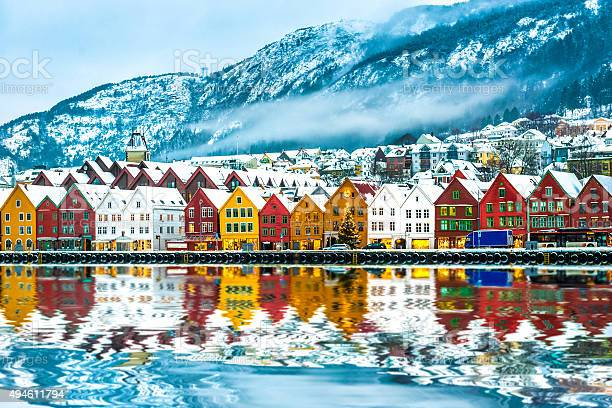

Venha conhecer  os melhores lugares da Ucrania
Turismo

Venha conhecer os melhores lugares para passaear com a familia ou mesmo até dar uma pausa no trabalho. acesse o site:
Lugares mais PopularesKiev
A capital ucraniana, Kiev, é uma cidade cheia de edifícios grandiosos adornados com
ouro,
arquitetura eclética,
uma antiga história a ser contada e uma vida noturna que não
costuma parar. Não à toa, a cidade é
casa para dois
Patrimônios da Humanidade da UNESCO:
a espetacular Catedral de Santa Sofia de Kiev, templo de
arquitetura
bizantina e barroca
construído no século 11; e o fascinante Mosteiro de Kiev-Petchersk, do mesmo
século.
Outros
pontos turísticos incluem a famosa rua Andriivs'kyi e suas casinhas em estilo
art nouveau. A cidade
também é
popular, já que de lá saem tours para conhecer Chernobyl.
E-mail:
Ucrania.orgturismo@.com
Tefone para Contato:
(11) 3216-6632Para Melhorar a experiência em nosso site
Baixe para Papel de Parede